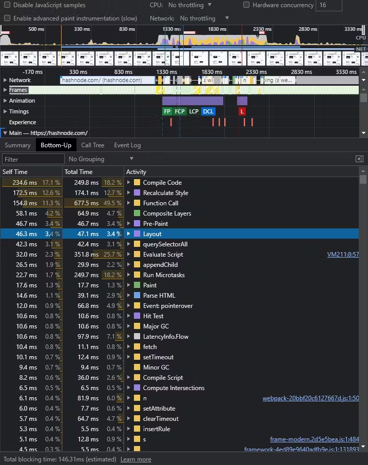

浏览器事件循环-微任务和宏任务，调用栈，渲染队列：布局，绘制与合成
翻译计划： 2024.1
此文翻译自： https://blog.xnim.me/event-loop-and-render-queue#heading-task-queue 已经获取作者授权
此文主旨在于关注事件队列， 执行顺序 以及开发者如何优化代码。 完整思路如下：

事件队列
古老的操作系统不支持多线程， 那时候的事件循环就类似这样一个简单的循环:
while (true) {
if (execQueue.isNotEmpty()) {
execQueue.pop().exec();
}
}
在老的操作系统上， 这段代码会疯狂跑满全部cpu。 （真的吗？ – 年轻的译者注） 现代操作系统调度器非常复杂， 包括优先级，执行队列， 和其他的技术。
我们可以把事件循环理解为一个圆圈，系统就一圈一圈地检查， 有没有待执行的任务 （pending task）。

下面这些行为， 都会在事件循环里生成任务：
script标签- 延迟任务：
setTimeout,setInterval,requestIdleCallback - 浏览器的事件处理API:
click，mousedown,input,blur等等。- 有一些事件是用户初始化的，比如点击事件， tab切换这种
- 有的事件是来自于代码， 比如 ajax 的响应啥的
promise状态变化； （关于promise， 可以看这个文章, emmm这篇文章是我准备留给2月份翻译的）DOMMutationObserver,IntersectionObserver这种 Observer 家族的RequestAnimationFrame
Almost everything we described above is planned through
WebAPI(or browserAPI). 注: 这句不知道该咋翻译， 不过不重要…
举个例子， 有这么一行代码:
setTimeout(function a() {}, 100)
当我们执行 setTimeout 的时候，浏览器(WebAPI)会将任务延迟100ms. 到100ms了， 就把 function a()推进任务队列（TaskQueue）。 事件循环在下次循环中拿到并执行这个任务。
说到任务， JS 代码和浏览器的执行最终都会反映在 DOM 上。
-
JS 代码:
- 读取 DOM 元素数据: size, attributes, positions 等等
- 修改属性：
data-*,width,height,position, css 属性啥的 - 增删 HTML 节点
-
然后浏览器渲染数据， 用户就能看到更新了。
现代浏览器用一个线程 执行 JS代码和渲染页面。 （除非我们开了 Web/Shared/Service worker)
这就意味着， 在事件循环里， 必须有渲染一部分留给渲染的时间。 咱可以把它叫做 渲染队列(render queue)
渲染队列是怎么执行的呢？
帧渲染(Frame rending) 不是一个单独的动作， 有好几个步骤。每个步骤都会再细分成子步骤。 下面展示了一般渲染一帧需要做的事情:  让我们来深入一下每一步的细节
Request Animation Frame （RAF）
 浏览器已经准备好渲染了， 我们可以订阅这个时机， 并为这个动画步骤渲染和准备这一帧。 这个 callback 比较适合用在动画， 或者对DOM的一些操作上。
浏览器已经准备好渲染了， 我们可以订阅这个时机， 并为这个动画步骤渲染和准备这一帧。 这个 callback 比较适合用在动画， 或者对DOM的一些操作上。
✍️ 关于 RAF 一些有趣的点：
- RAF’s callback 有一个参数
DOMHighResTimeStamp. 这个参数是一个从文档的生命周期开始至今的毫秒值。不需要用performance.now(), 这里就有平替。 - RAF 返回一个描述符（id）， 可以用来取消RAF(
cancelAnimationFrame) , 跟setTimeout一个用法 - 如果用户最小化了浏览器， 浏览器就不会再进行渲染动作了， 也意味着不会再收到RAF给的回调。
- 改变DOM元素尺寸和读取元素属性的 js 代码， 可能会强制触发
requestAnimationFrame - Safari 在 帧渲染之后调用 RAF。 它是唯一一个跟大家不一样的。 https://github.com/whatwg/html/issues/2569#issuecomment-332150901
那么， 如何检查浏览器渲染帧率？看下下面的代码
const checkRequestAnimationDiff = () => {
let prev;
function call() {
requestAnimationFrame((timestamp) => {
if (prev) {
console.log(timestamp - prev);
// 60FPS的时候这里应该是 16.6ms左右
}
prev = timestamp;
call();
});
}
call();
}
checkRequestAnimationDiff();
这里是执行结果

Style （recalculation） 重新计算样式
 ✍️浏览器会在这一步重新计算样式。 这里也会计算媒体查询。
✍️浏览器会在这一步重新计算样式。 这里也会计算媒体查询。
这里的重新计算， 包括直接改值的 a.styles.left = '10px' , 以及 css内容更改。比如 element.classList.add('my-styles-class'). 这里都会按照 CSSOM 和渲染树重新生成。
(译者注：CSSOM: CSS Object Model)
如果打开控制台， 打开这个 hashnode.com 网站， 可以看到 Style 阶段看到花费的时间。
Layout 布局
✍️ 这一步计算布局， 元素位置， 尺寸以及相互之间的影响关系。 页面上的DOM越多这一步就越费劲。 
布局 (Layout) 在浏览器里是一个相当费劲的操作。 下面是触发 布局(Layout) 的一些行为：
- 读取跟元素尺寸和位置相关属性的时候 (
offsetWidth,offsetLeft,getBoundingClientRect, etc.) - 写入跟元素尺寸和位置相关属性的时候。 不过也有一些例外( 比如
transform和will-change) 。
下面这段没咋看懂， 好在也不影响主题
transformoperates incompositionprocess.will-changewould signal to the browser, that changing the property should be calculated incompositionstage. Here you can check the actual list of the reasons for that: https://source.chromium.org/chromium/chromium/src/+/master:third_party/blink/renderer/core/paint/compositing/compositing_reason_finder.cc;l=39
小结一下， Layout 负责:
- 计算布局变化
- 元素插入到布局
✍️ Layout 在元素改变大小或读取元素属性的时候执行。 这个过程叫 强制布局 (force layout). 下方链接列出了会出发强制布局的属性： https://gist.github.com/paulirish/5d52fb081b3570c81e3a.
✍️ 当强制布局触发的时候，浏览器会暂停 JS 主线程。调用栈里有东西也不行，硬停。
比如下面的例子
div1.style.height = "200px"; // Change element size
var height1 = div1.clientHeight; // Read property
浏览器需要先计算 div1 尺寸， 才能得到 clientHeight . 所以浏览器暂停了 JS 执行: Style 步骤检查改变的部分， Layout 重新计算尺寸。 Layout 不仅是计算 div1前面的元素， 后面的也要算。 现代浏览器会优化到不会每次都计算全部dom, 但是也没准儿，最糟的情况就会全算。 这个计算的过程叫 Layout Shift . 我们可以在下图中看到更改或移动的元素：

浏览器会尽量减少计算布局， 所以会把一些动作分组计算：
div1.style.height = "200px";
var height1 = div1.clientHeight; // <-- layout 1
div2.style.margin = "300px";
var height2 = div2.clientHeight; // <-- layout 2
第一行改了 div 的高度
第二行，浏览器要读取属性， 但是咱们的高度改变还没动能， 所以浏览器要强制重新布局。
第三四行也是一样的。
所以我们可以换一种更优的分组写法：
div1.style.height = "200px";
div2.style.margin = "300px";
var height1 = div1.clientHeight; // <-- layout 1
var height2 = div2.clientHeight;
上面的写法可以让我们避免两次布局， 因为到了第四行的时候， 已经拿到了全部的数据了。
我们现在看到， 事件循环从单个循环变成了多个循环了， 因为我们会在任务和微任务的时候， 随时触发强制布局(force layout).

有的设备会这样优化布局:
- 减少DOM 节点数
- 把 属性读写动作 分组，以减少不必要的布局
- 用 force composite 替代 force layout
Paint 绘制
✍️ 我们在可视区域有了元素的位置和尺寸。 现在要给它涂颜色/背景， 开画
 这步操作通常不会花费太多时间， 除了第一次渲染的时候可能比较长。 这步以后， 我们就可以真正的绘制一帧了。 最后一步叫做合成(Composition)
这步操作通常不会花费太多时间， 除了第一次渲染的时候可能比较长。 这步以后， 我们就可以真正的绘制一帧了。 最后一步叫做合成(Composition)
Composition 合成
✍️ 合成(Composition) 是唯一一个默认GPU的阶段。 这一步浏览器只执行特定的css， 比如"transform".
重要提示： transform: translate不能“开启”GPU渲染。 所以如果之前有传言可以通过 transform: translateZ(0)开启GPU渲染，实际不行，是误解。
现代浏览器只会自行将一部分操作转为GPU操作。 我目前没找到最新的信息， 感兴趣的人可以自己看源码。https://source.chromium.org/chromium/chromium/src/+/master:third_party/blink/renderer/core/paint/compositing/compositing_reason_finder.cc;l=39
✍️ transform 是复杂动画的最佳选择：
- 我们不会每次都重新布局， 节省CPU时间
- 这些动画不会有卡顿，（通过top, right, bottom, left可能会卡）
如何优化渲染？
✍️ 在每一帧渲染中， 最难的操作就是 布局(layout) 了。 当我们有复杂动画的时候， 每一次渲染需要移动受影响的DOM元素，这里就需要13-20ms（或更多）。 这就丢帧了，看起来性能不好。
想要优化性能的话， 可以跳过一些渲染阶段：
 ✍️ 我们可以跳过 布局(layout) ， 如果只是简单的改变颜色，背景啥的。
✍️ 我们可以跳过 布局(layout) ， 如果只是简单的改变颜色，背景啥的。
✍️ 也可以用 transform 移动同时不读取DOM属性的方式， 跳过布局(layout)和绘制(paint)两个阶段。 这样可能能会把他们缓存在内存里。
✍️小结一下， 下面是具体建议：
- 尽量用CSS做动画， JS代码总会有开销。
- 用
transform移动 - 用
will-change属性。 给浏览器标记“准备好”要变的DOM元素。 https://developer.mozilla.org/en-US/docs/Web/CSS/will-change - 批量改变 DOM
- 用 requestAnimationFrame 来有计划地在下一帧做变化
- 合并对CSS属性的 读/写 操作， 并缓存他们。
- 关注强制布局属性 https://gist.github.com/paulirish/5d52fb081b3570c81e3a
- 遇到异常情况， 最好开控制台看看，能找到具体是哪个阶段的问题
- 要一步一步优化， 不要一次改多个地方。
最终事件循环长啥样？
我们可以在 https://github.com/w3c/longtasks/blob/loaf-explainer/loaf-explainer.md#the-current-situation 这里看到现代浏览器事件循环的示意代码：
while (true) {
const taskStartTime = performance.now();
// It's unspecified where UI events fit in. Should each have their own task?
const task = eventQueue.pop();
if (task)
task.run();
if (performance.now() - taskStartTime > 50)
reportLongTask();
if (!hasRenderingOpportunity())
continue;
invokeAnimationFrameCallbacks();
while (needsStyleAndLayout()) {
styleAndLayout();
invokeResizeObservers();
}
markPaintTiming();
render();
}
- 2024.2.8 13:51 终于翻完了初稿